Opisthotropis
The genus Opisthotropis (family Colubridae) has 25 living species in SnakeList (none venomous), recorded in 8 countries.
- 25living species
- 25non-venomous
- 8countries
About the genus
A genus of the family Colubridae (colubrids).
Species
Showing 25 species
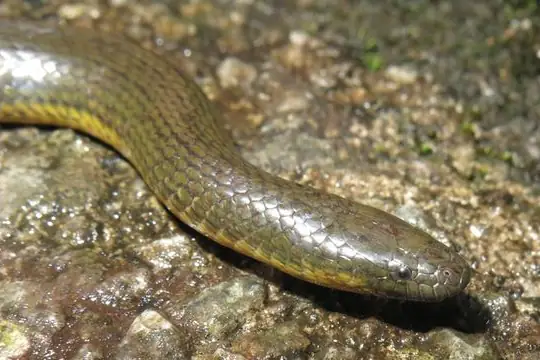
Anderson's Mountain KeelbackOpisthotropis andersonii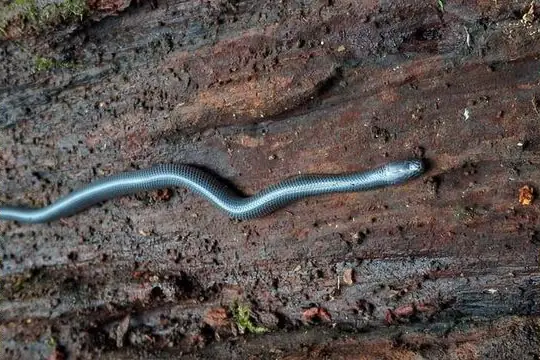
Chapa Mountain KeelbackOpisthotropis jacobi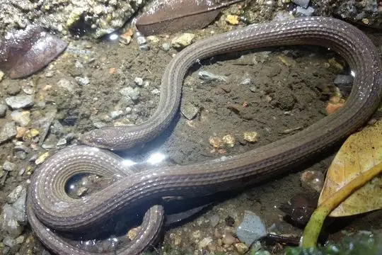
Chinese Mountain KeelbackOpisthotropis kuatunensis- No photo yetCuc's Mountain SnakeOpisthotropis cucae
- No photo yetDao Van Tien's Stream SnakeOpisthotropis daovantieni
- No photo yetDurand's Mountain Stream SnakeOpisthotropis durandi
- No photo yetGary's Mountain KeelbackOpisthotropis alcalai
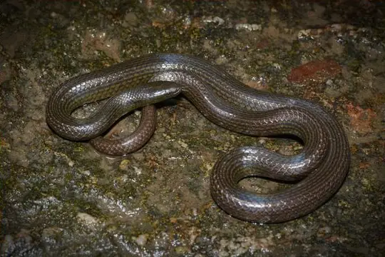
Guanxi Mountain KeelbackOpisthotropis guangxiensis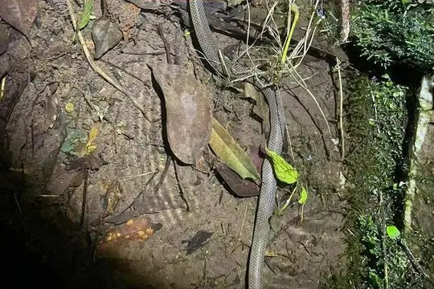
Hai Ha Mountain Stream KeelbackOpisthotropis haihaensis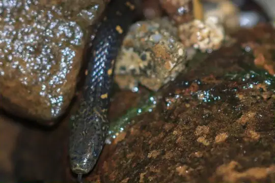
Kikuzato's Brook SnakeOpisthotropis kikuzatoi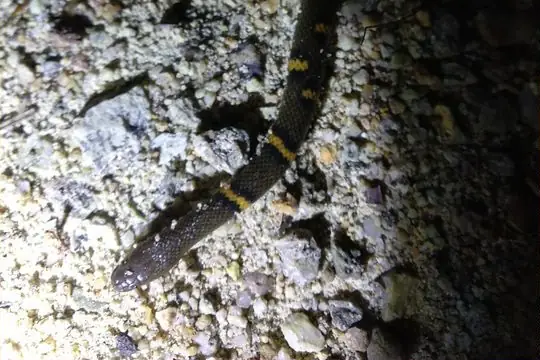
Lau's Mountain Stream SnakeOpisthotropis laui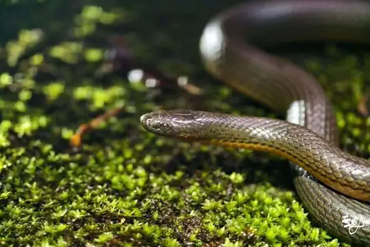
Maxwell's Mountain KeelbackOpisthotropis maxwelli Olive Mountain KeelbackOpisthotropis typica
Olive Mountain KeelbackOpisthotropis typica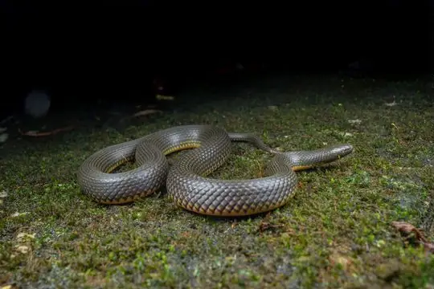
Shenzhen Mountain Stream SnakeOpisthotropis shenzhenensis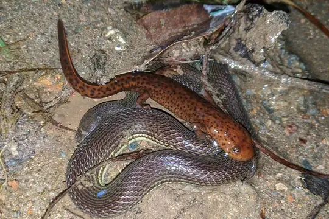
Sichuan Mountain KeelbackOpisthotropis latouchii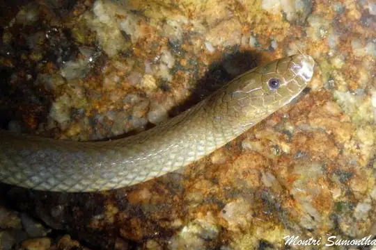
Smith's Mountain KeelbackOpisthotropis spenceri- No photo yetSpotted Mountain Stream SnakeOpisthotropis maculosa
- No photo yetSumatran Stream SnakeOpisthotropis rugosa
- No photo yetTam Dao Stream SnakeOpisthotropis tamdaoensis
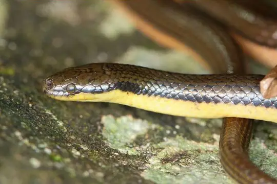
Tonkin Mountain KeelbackOpisthotropis lateralis- No photo yetVo Quy’s Mountain Stream KeelbackOpisthotropis voquyi
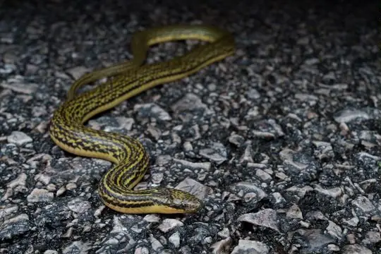
Zhao's Mountain Stream SnakeOpisthotropis zhaoermii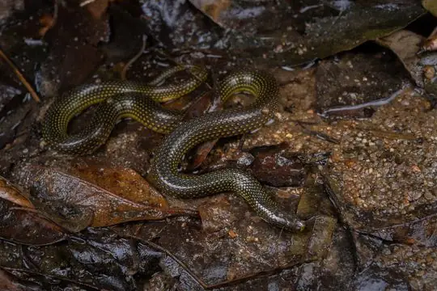
张氏后棱蛇Opisthotropis hungtai- No photo yetOpisthotropis atra
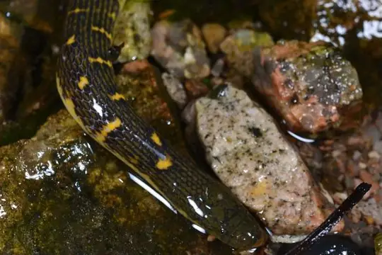
Opisthotropis cheni
No snakes in Opisthotropis match.
About the genus Opisthotropis
- Distribution: living species recorded in 8 countries, on one continent: Asia.
- Family: Colubridae.
- Countries and territories: China, Indonesia, Japan, Laos, Malaysia, Philippines, Thailand, Vietnam.
Compare its species
Its living species side by side. Lengths come only from SnakeList’s reviewed, sourced accounts; the others are left blank rather than guessed.
| Species | Venom | Recorded in | Adult length (reviewed accounts) |
|---|---|---|---|
| Anderson's Mountain Keelback Opisthotropis andersonii | Non-venomous | 2 countries (Asia) | No reviewed account yet |
| Chapa Mountain Keelback Opisthotropis jacobi | Non-venomous | 1 country (Asia) | No reviewed account yet |
| Chinese Mountain Keelback Opisthotropis kuatunensis | Non-venomous | 1 country (Asia) | No reviewed account yet |
| Cuc's Mountain Snake Opisthotropis cucae | Non-venomous | 1 country (Asia) | No reviewed account yet |
| Dao Van Tien's Stream Snake Opisthotropis daovantieni | Non-venomous | 1 country (Asia) | No reviewed account yet |
| Durand's Mountain Stream Snake Opisthotropis durandi | Non-venomous | 3 countries (Asia) | No reviewed account yet |
| Gary's Mountain Keelback Opisthotropis alcalai | Non-venomous | 1 country (Asia) | No reviewed account yet |
| Guanxi Mountain Keelback Opisthotropis guangxiensis | Non-venomous | 1 country (Asia) | No reviewed account yet |
| Hai Ha Mountain Stream Keelback Opisthotropis haihaensis | Non-venomous | 2 countries (Asia) | No reviewed account yet |
| Kikuzato's Brook Snake Opisthotropis kikuzatoi | Non-venomous | 1 country (Asia) | No reviewed account yet |
| Lau's Mountain Stream Snake Opisthotropis laui | Non-venomous | 1 country (Asia) | No reviewed account yet |
| Maxwell's Mountain Keelback Opisthotropis maxwelli | Non-venomous | 1 country (Asia) | No reviewed account yet |
| Olive Mountain Keelback Opisthotropis typica | Non-venomous | 2 countries (Asia) | No reviewed account yet |
| Shenzhen Mountain Stream Snake Opisthotropis shenzhenensis | Non-venomous | 1 country (Asia) | No reviewed account yet |
| Sichuan Mountain Keelback Opisthotropis latouchii | Non-venomous | 1 country (Asia) | No reviewed account yet |
| Smith's Mountain Keelback Opisthotropis spenceri | Non-venomous | 1 country (Asia) | No reviewed account yet |
| Spotted Mountain Stream Snake Opisthotropis maculosa | Non-venomous | 1 country (Asia) | No reviewed account yet |
| Sumatran Stream Snake Opisthotropis rugosa | Non-venomous | 1 country (Asia) | No reviewed account yet |
| Tam Dao Stream Snake Opisthotropis tamdaoensis | Non-venomous | 1 country (Asia) | No reviewed account yet |
| Tonkin Mountain Keelback Opisthotropis lateralis | Non-venomous | 2 countries (Asia) | No reviewed account yet |
| Vo Quy’s Mountain Stream Keelback Opisthotropis voquyi | Non-venomous | 1 country (Asia) | No reviewed account yet |
| Zhao's Mountain Stream Snake Opisthotropis zhaoermii | Non-venomous | 1 country (Asia) | No reviewed account yet |
| 张氏后棱蛇 Opisthotropis hungtai | Non-venomous | 1 country (Asia) | No reviewed account yet |
| Opisthotropis atra | Non-venomous | No country recorded (Asia) | No reviewed account yet |
| Opisthotropis cheni | Non-venomous | 1 country (Asia) | No reviewed account yet |